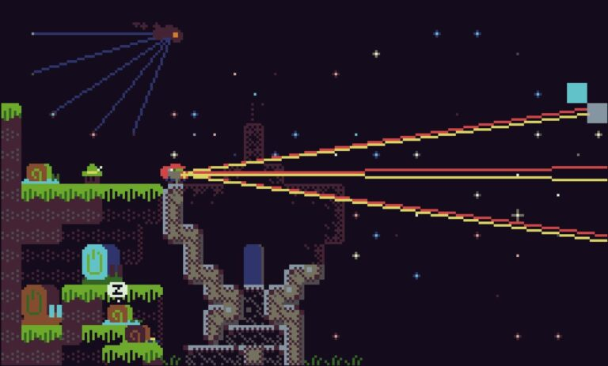

Epiphany Games
Some games derive their fun from moments of discovery and understanding. Puzzle games But epiphany games are bigger
EMUUROM

Scan all objects and find all secret paths. Not so much about solving puzzles.
- Epiphany Score
- 5
- Overall Score
- 6
EMUUROM asks the player to explore every detail of the world to find all its secrets. The problem is, the level design and game mechanics are not fun by themselves.
EMUUROM is a time-consuming scavenger hunt. There are a couple epiphany moments. One in particular was really cool.
Like many games of its type, EMUUROM features a secret writing system. However, the language encoded is not English, but rather a particular dialect of Finnish, spelled phonetically. Google translate struggles, even when the messages are perfectly deciphered. The messages are not used for that many secrets, anyway, so the whole secret language thing was a disappointment.